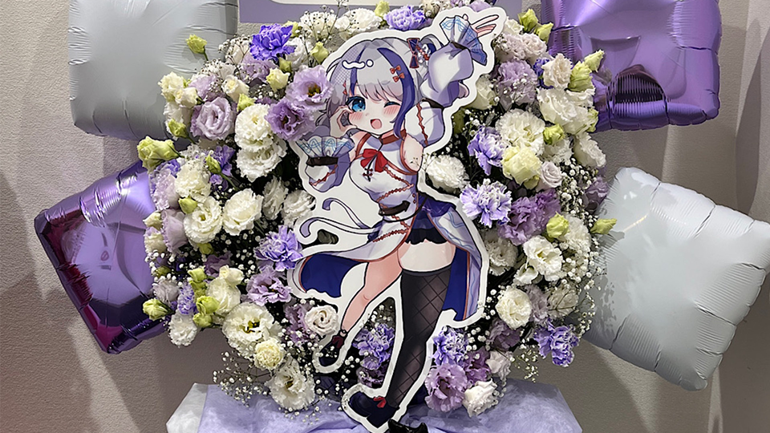

初めてフラワースタンドを制作する方に向けた
並走型ナビサイト
・フラワースタンドの予算シミュレーション
・おすすめのサイトの紹介
編集の経験を元に選出したサイト
過去二回フラワースタンドを出した経験からの紹介
ライブ会場、演劇の劇場、お店の開店祝いなどの入口によく飾られている、金属製のスタンドに乗せられた豪華なお花のことです。
特徴: お花だけでなく、バルーン（風船）、LEDライト、イラストパネル、リボンなどで華やかに装飾されます。
推し活文化: 最近では、アニメやアイドル、VTuberなどのイベントで、ファン有志がお金を出し合って「推し（大好きな出演者）」へ愛と感謝を伝えるために贈る文化が定着しています。
